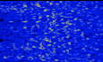

welcome to RFI hell

my greatest enemy, sans powerpoles
RFI, or radio frequency interference, refers to all of the electromagnetic signals you don't want to hear. In the electrical world, it's also called noise, and if you're wondering why, all you have to do is find some and listen to it- you'll see. It ranges from shreiking, to warbling, to pulsing, to static, depending on the source.
RFI can be generated by practically any electrical device or fixture. Badly sheilded power supplies, power lines, computer monitors, lightbulbs, and washing machines are all things that I have fought over airwaves with, to little avail.
To circumvent RFI, you can use at-home remedies like wrapping power lines around ferrite core- sometimes this works, other times it doesn't. If you can determine the source of the RFI, sometimes it's about replacing the device with something higher quality, or grounding an old electrical job in your basement. You may also be a minor, or live in a city, where eliminating RFI with forceful methods isn't possible. In this case, you can build antennas with narrow bandwidths, cancel out noise with two antennas, or invest in modern radios with insane noise blanking capabilities. Regardless, it's a huge pain.